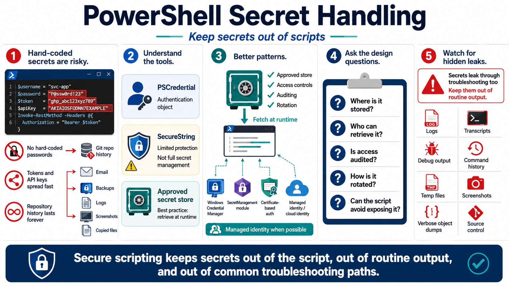

Secrets and Credential Handling
Connecting to LMS... Progress: in progress

Narration
Secrets do not belong hard-coded in scripts. Passwords, tokens, API keys, connection strings, private keys, and shared credentials can be copied, committed, emailed, logged, indexed, or left behind in backups. A script that works because a secret is embedded inside it is convenient only until the file leaves the original workstation or a repository history preserves it forever.
PowerShell provides credential-oriented tools, but they must be understood in context. PSCredential represents a username and credential object for authentication workflows. SecureString can reduce some casual exposure in memory and UI flows, but it is not a complete secret management solution and should not be treated as portable encryption. The right answer is usually to retrieve secrets from an approved store at runtime with access controls and auditing.
SecretManagement module concepts, Windows Credential Manager, certificate-based authentication, and managed identities can all support better patterns depending on the environment. The design question is the same: where is the secret stored, who can retrieve it, how is access audited, how is it rotated, and how does the script avoid exposing it while it runs. Cloud automation should prefer managed identity or workload identity patterns when they fit the platform.
Secrets can leak through surprising paths. Avoid writing them to logs, transcripts, debug output, command history, error messages, temporary files, screenshots, and source control. Be careful with verbose output and object dumps because a credential-adjacent object may contain tokens or headers. Secure scripting keeps secrets out of the script, out of routine output, and out of places operators search during troubleshooting.